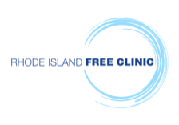

Step 1 · Relay
relay.rifreeclinic.org/login


Relay
Referral scheduling console
Sign in to Relay
You’ll enter your password and authenticator code on the clinic’s secure sign-in page.
Continue with clinic account →
→
Step 2 · Password + code
relay-rifc.auth.us-east-2.amazoncognito.com/login?client_id=…
Relay
Staff sign-in
Sign in
Sign in to your account.
name@host.com
Enter password
☐ Show passwordForgot your password?
Sign in